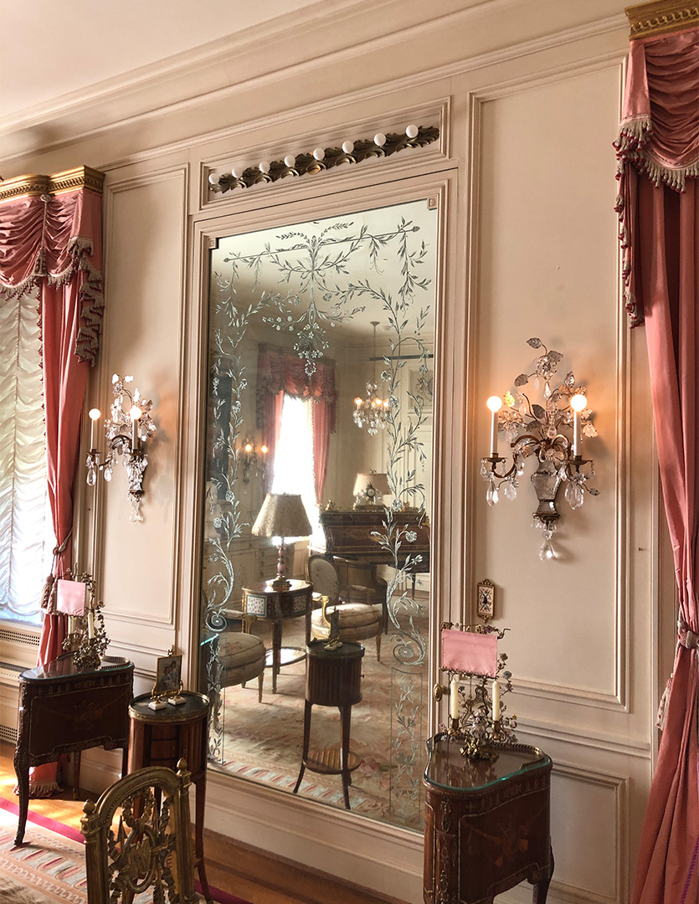

Exploring Historic Buildings and Gardens
I have always been interested in art history, design, and architecture. I also went to school for this, so in my free time I really enjoy visiting historic homes and gardens, especially when I travel to new places. Since I live in the Washington D.C. area, I am lucky enough to have several sites nearby to visit. Below are some of my favorite places in the area that I have toured:
 Hillwood Estate, Cleveland Park:
Per Hillwood's website: "Marjorie Merriweather Post bought Hillwood in 1955 and soon decided her home would be a museum that would inspire and educate the public. Her northwest Washington, D.C. estate endowed the country with the most comprehensive collection of Russian imperial art outside of Russia, a distinguished eighteenth-century French decorative art collection, and twenty-five acres of serene landscaped gardens and natural woodlands for all to enjoy. Opened as a public institution in 1977, today Hillwood's allure stems from the equally fascinating parts that make up the whole. From the captivating life of Marjorie Post to the exquisitely maintained mansion and gardens, the experience of Hillwood outshines even the Fabergé eggs."
Dumbarton Oaks, Georgetown:
 Per Dumbarton Oaks' website: "Dumbarton Oaks is a Harvard University research institute, library, museum, and garden located in Washington, DC. The institution is the legacy of Robert and Mildred Bliss, collectors of art and patrons of learning in the humanities. The museum houses world-class collections of Byzantine and Pre-Columbian art, two areas of interest to the Blisses. A third revolves around the historic garden, which Mildred Bliss created in close collaboration with renowned landscape designer Beatrix Farrand. Since 1940, when the Blisses gifted the estate and collections to Harvard University, Dumbarton Oaks has supported research in Byzantine Studies. Later it embraced Pre-Columbian and Garden and Landscape Studies. The support takes the form of fellowships and other awards, scholarly conferences, publications, and digital initiatives. In recent years, Dumbarton Oaks has also developed educational programs focusing on its collections and garden."
Per Dumbarton Oaks' website: "Dumbarton Oaks is a Harvard University research institute, library, museum, and garden located in Washington, DC. The institution is the legacy of Robert and Mildred Bliss, collectors of art and patrons of learning in the humanities. The museum houses world-class collections of Byzantine and Pre-Columbian art, two areas of interest to the Blisses. A third revolves around the historic garden, which Mildred Bliss created in close collaboration with renowned landscape designer Beatrix Farrand. Since 1940, when the Blisses gifted the estate and collections to Harvard University, Dumbarton Oaks has supported research in Byzantine Studies. Later it embraced Pre-Columbian and Garden and Landscape Studies. The support takes the form of fellowships and other awards, scholarly conferences, publications, and digital initiatives. In recent years, Dumbarton Oaks has also developed educational programs focusing on its collections and garden."